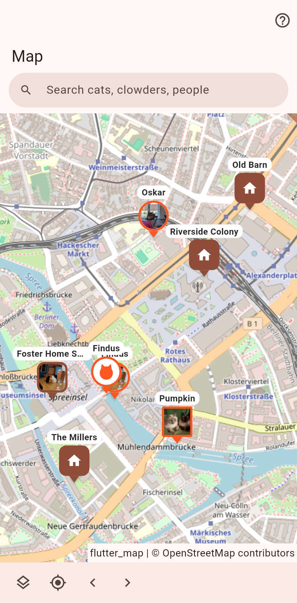

Every cat and place with a position. Homes at their address, cats at their latest sighting, posters where they hang, your own location fields as pins.

A round pin is a cat, a rounded square a home, a square a poster. Things on one spot share a pin with a count; a tap opens the list of what is there. A tap on a single pin draws its trail: every position in order, each a dot whose hold offers the history, a correction and removal. The arrows at the bottom walk from pin to pin.
Search finds cats, people and places; an unknown name is looked up worldwide. The layers button draws the possible stray area of a missing cat: 500 m circles around its posters and the home it ran from.
A hold on the ground asks which cat, then whether it was seen here or its poster hangs here. A hold on a poster's pin offers "Flier taken down", which removes that position like any history row, and the history.